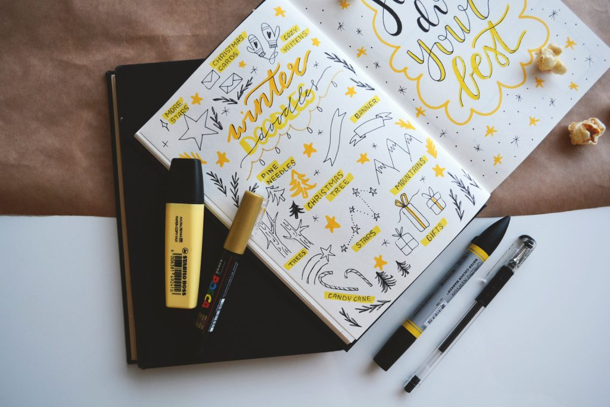

My Bullet Journal

Choosing a Journal
The first step to starting a Bullet Journal is selecting
the right book for you.
There are a few options out there to choose from, with so many
different beautiful covers; and even plain covers if thats your preference.
In the menu
below you will find more information on different types of journals to look out for.
Take the time to consider what you feel works best for you and then take the leap.
Good Luck finding your new Journal
Different types of Journals
- Blank
- Bullet/Dotted
- Lined
- Squared
- Combination of all or some of the above